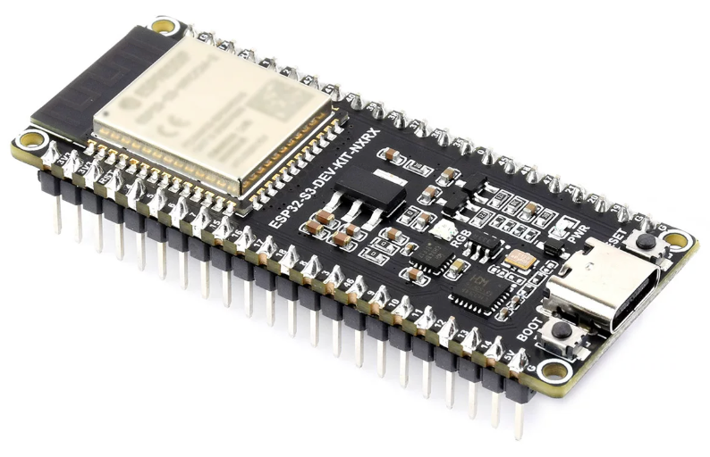
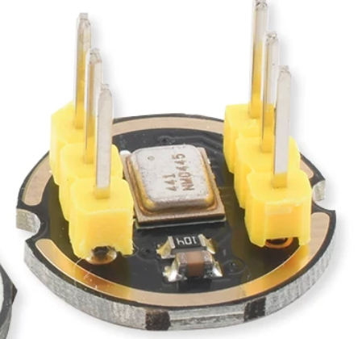
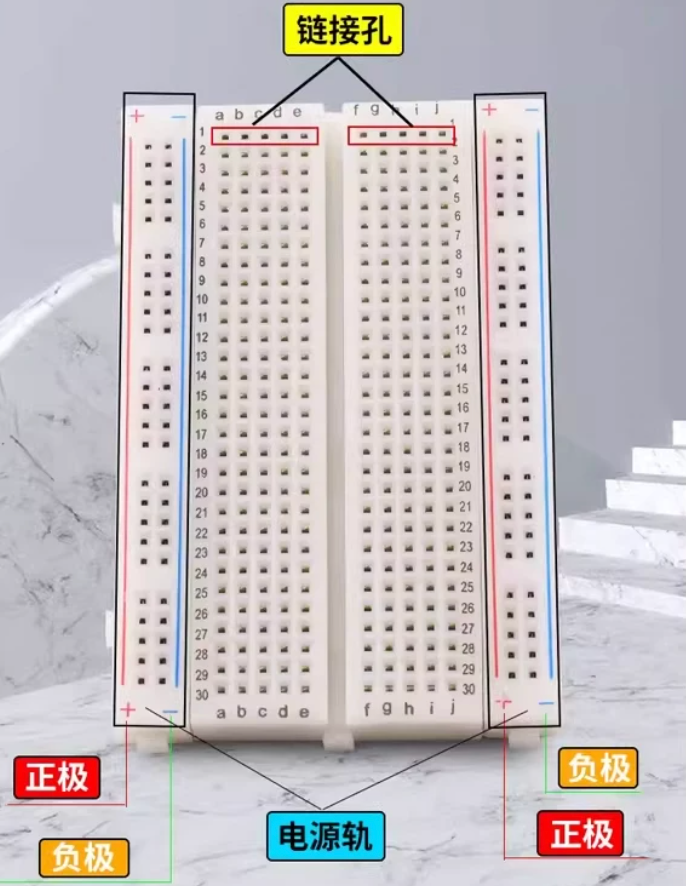

第 1 步：购买硬件
先把三样基础硬件准备好，后面的接线和测试会顺很多。
购物清单
| 硬件 | 规格 | 参考价格 | 硬件图(点击放大) |
|---|---|---|---|
| 单片机 | ESP32-S3 | 淘宝约 60 元 |  |
| 数字麦克风 | INMP441 | 淘宝约 6.5 元 |  |
| 面包板 | 普通实验面包板 | 淘宝约 13.6 元 |  |
下单前确认：ESP32-S3 开发板要带 USB 接口，INMP441 请选择数字 I2S 麦克风模块。面包板用来免焊接线，适合先做实验。